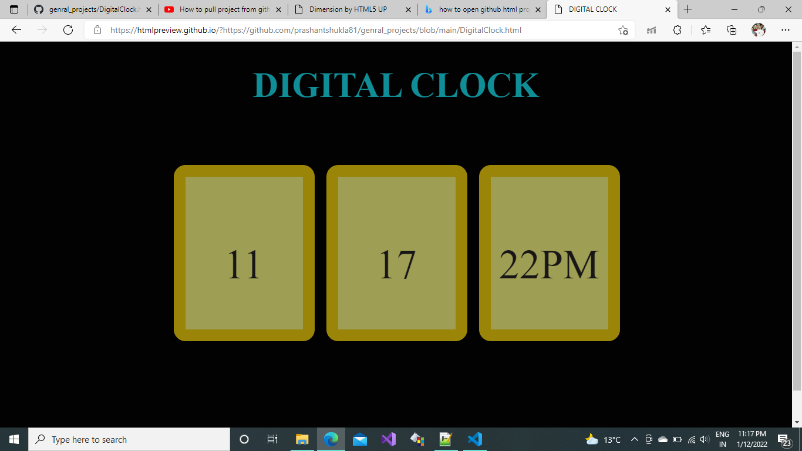
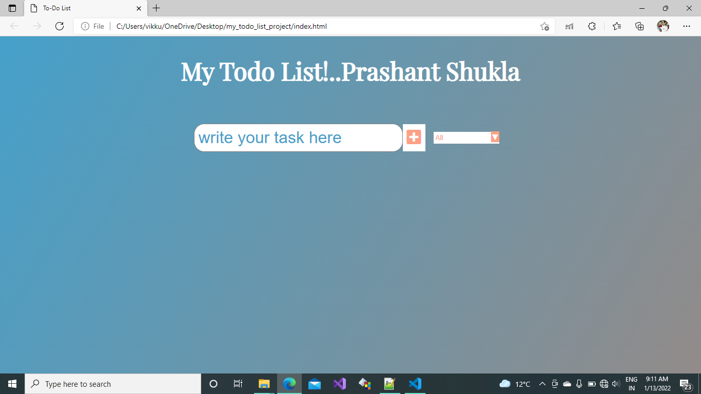
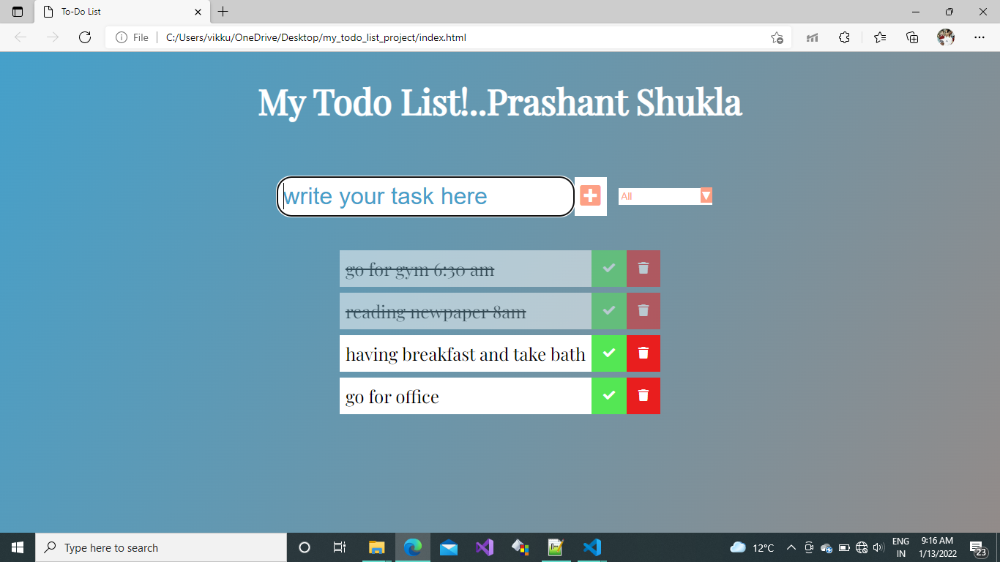
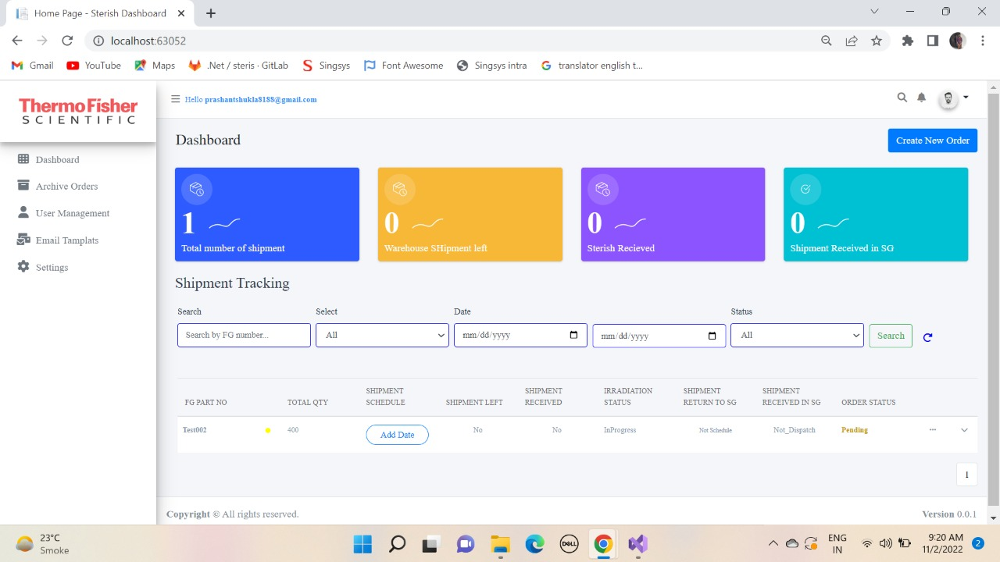

Summary

My name is Prashant Shukla.
I'm a graduate(2021 batch) from Institute of Engineering and Technology, Lucknow batch 2018-21.
I majorly program in C++ language. I also have knowledge of version control and JavaScript, .Net framework.
I also write technical bolgs. I've profound interest in the new technologies, thus my branch is Information Technology. Its always fascinationg to design the beauties of greatest human endeavours with code snippets.I'm trying my best to deliver back the best I could with providing the lines of codes that I write.
For now my idol is Elon Musk. I also admire Stephen Hawkings. Apart from tech work I've a profound love for astrophysics and the technologies related with the functioning of the same.
Work
1.Digital Clock -
Special features are :
- gives brief explanation about date time as well.
---simple javaScript Html css project

2.TODO List
Special features are :
- Lets you store the data in local storage

- Separate columns for completed and uncompleted tasks

- entries can be deleted too
B.3* at HackerRank
C. I've done Web development internship at R.D.S.O. lucknow.
D. My certificates for various courses, internship about which I've uploaded here
1.Shipment Dashboard -
Special features are :
- That is shipment tracking webapplication
---Technology Used--> Dot Net Mvc,jquery,Ajax,MSSql,Bootstrap,Html,CSS

About
Working as a software engineer in Programmers IO India Pvt. Ltd.
Techoology that I have hands on:
Microsoft Technology
- .NET framework 4.9
- .NET core 6
- .NET core web api
- .NET core MVC
- .NET Razor pages
- .NET Blazor
FrontEnd--> AngularJs 13
Other Tools /Techology
- HTML/CSS/Java Script
- JQuery?Ajax
- GitHub/Gitbash/Git Lab
- Azure DevOps
- MS SQL
Web Devlepment opportunities
I would also like to say that I'm very sincere and strict about my work as I'm not a fast learner but more of a realist person. I tend to practise again and again with utmost precision until I make it right, thus I might constantly pin the people I'm working with/under, but a promise to deliever the best that I'm asked to do.
All I need is an opportunity.
Contact me here...